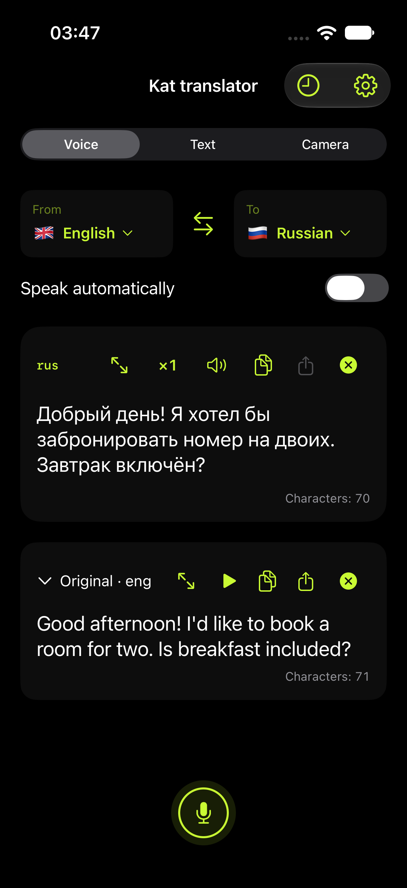
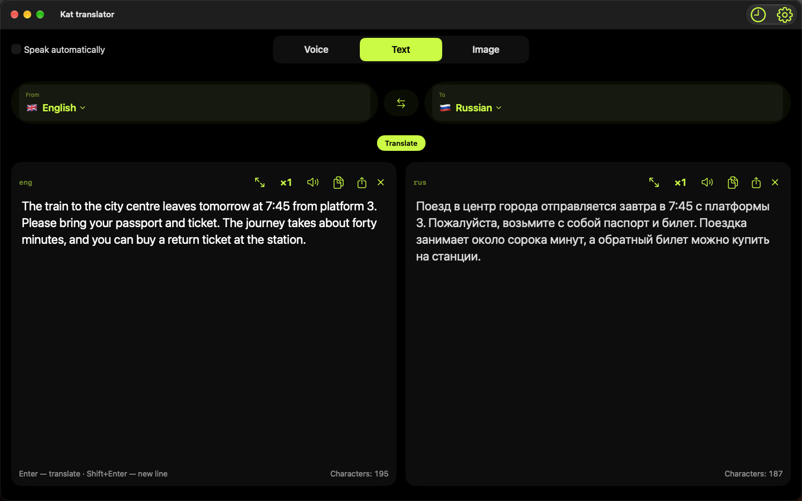

Local AI. A world of words.
Your words.
No borders.
Speak, type, understand. Translate with AI on your device — even without an internet connection.
Download your models first. Then take your languages with you.
iPhone · Apple Silicon Mac · Android

Upcoming interface · prepared exampleKat in motion
Two coffees. One little cat.
A short tour: a real translation, a look at Settings, and a cat with places to be.
38 seconds · iPhone Simulator · edited sequence, scenes at normal speed. Models downloaded beforehand. Not a physical-iPhone speed test. No sound.
Download the video →A closer look
From your words
to their language.
Record a phrase, translate a message, or read words in an image. Choose the way that fits the moment.
Let your voice do the talking.
Translate your recording, read the original and listen to the result in a supported voice.
Explore all screenshots →Screens show the upcoming Apple update. The Voice example uses prepared text; the Store interface may differ.

Room to work
At home on your Mac.
Keep the original and translation side by side. Translate text, audio files, images or a selected area of your screen.

Ready before you go
Your languages.
Your choice.
Quick setup brings models and voices together. Pick a smaller model or a broader language selection to suit your device.
Features and languages vary by platform and model. An internet connection is needed for downloads. Check important details against the original.